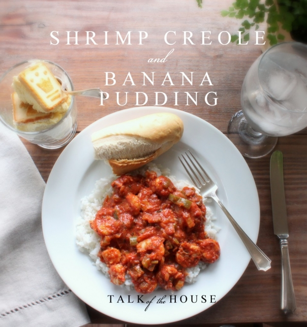
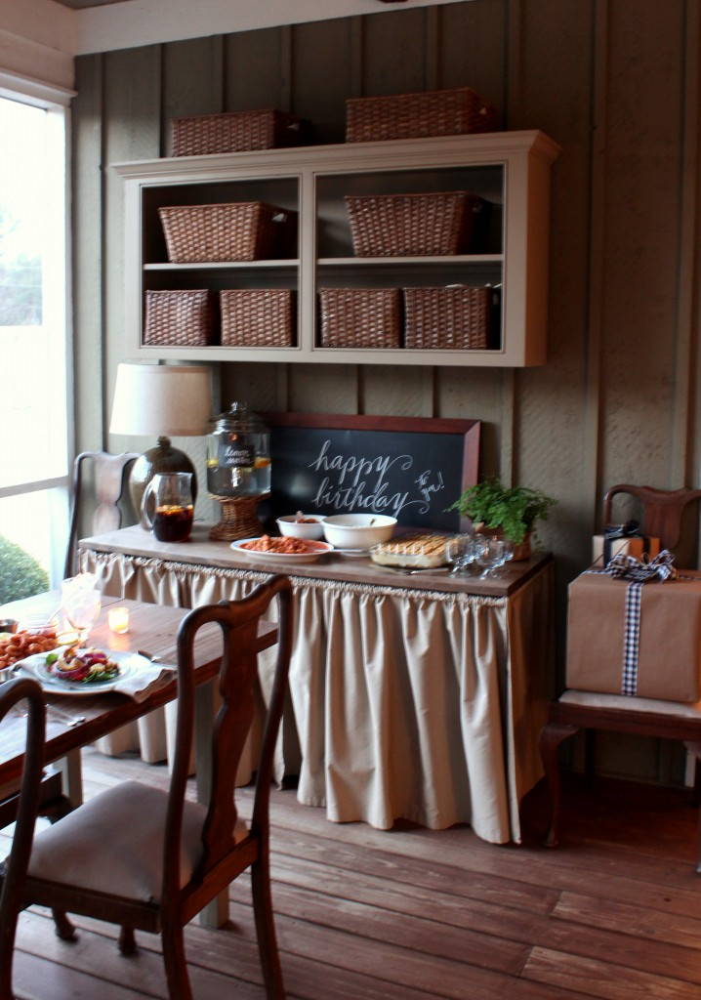
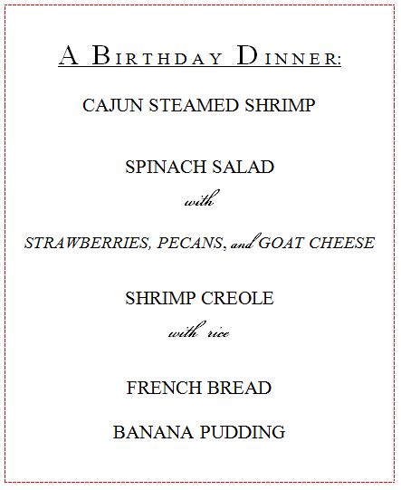

.png)
.PNG)
.PNG)
.PNG)
.PNG)
.PNG)
.JPG)
.JPG)
.PNG)
.PNG)



And now for the rest of the story.
You know that Valentine’s dinner that was in the last post?  Well you need to know that it wasn’t actually on Valentine’s Day.  Nope – that dinner was the night before Valentine’s Day.
And why was that, Kelly? you might ask.
Well you see, Â my husband left. (collective gasp here) He left me and ran off to the mountains of North Carolina.
On Valentine’s Day??
Yes, on Valentine’s Day. Â And do you know what was even worse than his leaving on Valentine’s Day?
What could be worse than that?
His birthday was the day after Valentine’s Day!
Oh my! Â He better have a good explanation for doing such a thing!
Well he does. 🙂
My husband loves to ski, and he loves our church youth group. Â So he ran away to the mountains of North Carolina (Boone to be precise) to be a chaperone for their ski trip, and they did indeed leave on Valentine’s Day. And yes, he was not at home for his birthday either.
So…

We had a birthday dinner last night when he returned home.
While I was running around like a chicken-with-my-head-cut-off getting all the Valentine’s Day things done, I was thinking about plans for his birthday in the back of my mind. (Major multi-tasking!) Â Originally, I was going to have some of his friends over for a barbeque dinner, but his friend with the-crushed-ankle-that-has-had-surgery still could not make it, so I am postponing that idea. Instead we had a little family birthday dinner out on the back porch (since you know it is now spring here in crazy-weather Georgia.) Â And you know I have to share the menu with you.

This menu is actually kind of important. Â When we got married looong long ago, shrimp creole was prepared by my mother-in-law for our rehearsal dinner. It was one of our favorite dishes. Â My husband still loves it (a lot!) but since I have developed a serious allergy to shellfish, I can no longer eat this divine dish. And boy did I loooove me some shrimp. Â It was my all time favorite food. Â I loved it even more than chocolate, even more than fresh summer tomatoes with salt and pepper, even more than…coffee! Â Yes, that much! And I have not even prepared anything with shrimp since my first shellfish allergic reaction years ago. Â So for me to make this dish, and to sit at the table with it right in front of my face, well… they should just go ahead and nominate me for sainthood or whatever it is that you do to become a saint (and I am not even Catholic.) Don’t you agree?!
It is not a difficult dish to prepare. In fact, it would make an easy Sunday supper main dish. Â All you do is chop up the holy trinity of vegetables (bell pepper, onion, celery) and cook them in a little oil.
Then you add canned tomatoes and spices.
Simmer that for an hour, and finally you mix in the shrimp and simmer for 5 more minutes. Â Viola! Â You have yourself some delicious shrimp creole.
Do you see that small bowl above? Â I love the sauce with all the vegetables cooked in it, so we pan fried some chicken tenderloins sprinkled with garlic salt and pepper, cut them into bite size pieces, and mixed them in a couple of cups of sauce (before we added the shrimp) Â so that I could have Chicken Creole. It was a great substitute for this non-shellfish eater. Here is the recipe for the real deal dish.
Since I was being so kindhearted to risk my life with the preparation of this dish, I thought I would just go ahead and go all out by  adding steamed shrimp to the dinner since my husband loves it so much.  See it there below on the right?  Oh my gosh did that ever smell good! (Further assuring me my nomination into sainthood. 🙂 )
That salad had to be one of my favorites that I have made around here…spinach leaves, strawberry slices, bacon pieces, chopped pecans, purple onion slices, and crumbled goat cheese. Â I bought crostino slices and broke them up as croutons on the salad. For the dressing, we just used a grocery store bottled orange poppyseed dressing.
And that French bread was simply loaves from the deli that you bake. Â It was very delicious dipped in melted butter. Â I tried to find a recipe for a dish called Paradise Shrimp that we get at Bayou Bill’s in Destin, Florida. The shrimp are cooked in a lemon butter with a heavy dose of pepper, and it makes some great dipping for the French bread with which it is served. That butter sauce is what I wanted for dipping our bread, but I had no luck finding that recipe. Â Anyone out there have it??
And now for the dessert. I thought about making a cake, but I knew my mother-in-law was going to be making one for my husband, and we didn’t need two cakes around here. Â One of his favorite desserts is banana pudding, so I decided I would make it. As I started looking for recipes, I came across Paula Deen’s recipe for Not Yo’ Mama’s Banana Pudding. It looked a little fancier than your traditional one, and it sounded delicious, so I gave it a try. Â In case you are not familiar with it, you begin by layering Pepperidge Farm chessmen cookies in the bottom of a casserole dish.
Then top that with a layer of banana slices.
On top of that you put a layer of a mixture of Cool whip, sweetened condensed milk, cream cheese, French vanilla instant pudding mix,  and milk.Then you put one more layer of the chessmen cookies as the “icing” for the pudding, and refrigerate it for several hours. And if you add birthday candles to it, you have yourself a banana pudding birthday “cake.” 🙂
You can find the recipe on Paula Deen’s site by clicking here. I loved the taste of it! Â My husband says the traditional version tastes better to him when they are both freshly made (especially if the traditional one is warm,) but the Paula Deen version is far better than the traditional one after they have both been refrigerated. You will have to make it and decide for yourself I guess.
And here is the table all ready for serving. (Sorry for the blurry photo. Â Everyone was ready to eat!)
I totally forgot to take a photo of a plate during dinner, so I took one of the leftovers tonight. 🙂
And that was the birthday dinner for my husband who ran away on Valentine’s Day.
And now you know the rest of the story.
Thanks for stopping by today!


.PNG)
Hi Kelly,
I love your blog. It’s so inspiring. The meal you prepared looks delicious. I was wondering if you could tell me about the bread basket you used to serve the French bread. What a lovely way to serve bread. Can you share where you got the basket? Thank you for the inspiration!
————————————————————
I believe that basket came from Pottery Barn a couple of summers ago. It IS perfect for serving bread. (I looked for a long time to find one like that.) I bet PB still has a similar one available in their stores (or perhaps online.)
Have a great weekend Sheena!
Kelly
Love me some shrimp creole…and some Paula Dean Banana pudding! Everything about this meal was lovely!
———————————————————–
Glad you liked the post on the meal, Ginger. It was yummy!
Kelly
Dear St. Kelly,
I’ve thought of you as a saint as soon as I discovered you (and I am definitely not Catholic!).
I am going to make your shrimp dish for dinner tonight. Yes!! So easy and yet so delicious. Mmmmm. Hubby Bill is working today (poor him, lucky patients) so he will appreciate this on the table when he gets home.
We just got back from a few ski days at Skoki Lodge in our Rocky Mountains and shared the lodge with a whole group of teenagers and their parents (sounds very similar to what you hubby was doing!). I, unfortunately, was the one with the ailment. After skiing in 8 miles I developed a MONSTER of a blister on one foot… it was fine for the 3 days we stayed in the lodge but I was faced with the return trip with half my left heel skin ripped off. We covered it with Second Skin and moleskin and I survived the ski out but not without quite a bit of pain. Ouch!! Oh well, we are home safe and sound and my heel is healing 😉
Now I have Shrimp Creole to look forward to… thanks to you!
Hugs
Cath
————————————————————–
Ha ha..far from sainthood! I hope you made and enjoyed the shrimp creole. Your blister sounds terribly painful! I know that had to hurt, and I hope it heals quickly. Perhaps you can stay inside and be barefooted for a few days while it heals.
Kelly
Hi Kelly! I just found your blog whole at Hooked On Houses and I’ve spent the last half hour exploring it!! I love your personality and your love for family and cooking and going that extra mile. My hubby’s birthday is right before the 4th of July, so I always try to squeeze something special in. The birthday dinner (and the Valentine’s Day dinner) shows how you love to spoil your family. We are a lot alike!
I’m thrilled to have found another great blog to follow! 🙂
XO,
Jane
———————————————————–
Jane, I am thrilled you found my blog! So glad Julia at Hooked on Houses has sent such kind readers my way. It would be fun to do a birthday dinner around the 4th of July…lots of possibilities there. Thank you for your sweet comments. I hope you will be back to visit again!
Kelly
Such a good wife! 🙂
My best friend ONLY makes Paula’s recipe for this and swears by it. I, sadly, have never tried it. I think it’s about time, right?!
————————————————————
Yes, Lori it is about time for you to make it. It is VERY sweet, but my children really liked it. When I mentioned to them about perhaps leaving out the cream cheese the next time I make it, they said, “No way.” Definitely give it a try.
Kelly
Kelly,
I will totally nominate you for sainthood. You are a very sweet wife to prepare those dishes and super nice friend to share them with us! Everything looks wonderful! I love the fresh green plant and how inviting your porch looks!
————————————————————
You are so sweet to say that. The weather here has been perfect for enjoying the porch. I love that it is warm enough to be able to leave those fern like plants outside! But I KNOW we have not had our last taste of winter. This is just fooling us. After all, it is just the middle of February!
Kelly
Hi Kelly
I made your shrimp for dinner last night. It was delicious!!!!!
My presentation of the dish wasn`t anything like yours though 🙂 but it tasted deeevine.
I cant wait to make it for my son when he visits from West Africa next month. He LOVES chilli and this is just the right amount to handle in the middle of a heat wave as we are having at the moment LOL.
Xx
—————————————————————
I am so glad you were able to make it, AND that you enjoyed it. Our old recipe called for putting it over Reese’s Creole rice. Unfortunately it is not made anymore (or we just can’t find it anymore.) I miss it, because it really gave it more flavor. I hope your son enjoys it too when you make it for him.
Kelly
Saint Kelly, you did good! That dinner looked fabulous! I have a tried and true banana pudding recipe but I think I will try your version next time! From a woman who loves shrimp, I hate knowing you can no longer enjoy it!
If you are ever in Memphis, check out the restaurant Brennan Owen. We ate brunch there on Sunday after church with my sister and brother in law. Oh my goodness….while a jazz band played I feasted on shrimp,crepes,omelets and banana foster. There were more food stations but after 3 trips I was too embarrassed to explore more! Happy belated Valentine’s Day!
—————————————————————-
So glad to see your comment here Katrina! You are just rubbing it in with the shrimp at the restaurant though. LOL BUT an omelet and bananas foster would be fine anytime. Because I was serving creole at the b-day dinner, I seriously looked for a bananas foster cake (just to add to the Louisiana vibe of the meal.) Nothing I found appealed to me, and that is when I decided to go with a banana pudding. I hope you will give ol’ Paula Deen’s recipe a try. I keep going back for more of it! If we are ever in Memphis (which is supposed to have tons of great places to eat!) I will give Brennan Owen a visit. (That is such an unusual name for a restaurant.)
Kelly
Kelly, I love the fact that you make every occasion so special for your family. That does make you a Saint. I can’t wait to try your Shrimp Creole recipe, it sounds delicious. And, Paula Deen’s recipe for Banana Pudding is one of my favorites. I often make it for church and it is a huge hit every time. I want to try your favorite salad. Have you used other dressings? I hope your husband had a wonderful birthday and has a year filled with lots of blessings. Thank you for the inspiration you provide to all of us who enjoy your blog. I hope you enjoyed your Winter Break! By the way, what kind of cake did your Mother In Law make for the birthday?
————————————————————
No Saint here…I just like “pretty things.” 🙂 I hope you will try the recipe Pat. It is very good, and I can see why that banana pudding would go fast at a church dinner. I have not used other dressings with the salad when it has had goat cheese on it, but a raspberry vinaigrette was excellent with it when I did not have the goat cheese. I would think it would work great with it as well. You would ask about the cake. 🙂 She was supposed to have baked it yesterday, but my father-in-law has been ill. She plans to make it this weekend, and it will be…wait for it…red velvet! (Your fabulous specialty!)
Kelly
You are really treating us ALL with these Fabulous February posts! You put so much love and time into your blog — if your are not a Saint (yet) you most certainly are an angel to use your precious time off work to bless us with these eye candy ideas!! While at the Cheese Cake Factory, I tried their shrimp tacos— oh, my—so good with the summer rolls! When going out– I try to get something I haven’t had before— but it is hard when you know what is your favorite. I do think these winter posts are my favorite ones of all time– even though fall is my favorite season! You make every season/holiday a “Kodak Moment”!
————————————————————–
Okay. Stop. I was just kidding about the saint stuff! 🙂 But I am glad you enjoyed the post. Shrimp tacos….that sounds very delicious! In fact, if I did not have this allergy I would order them and the Cheesecake factory tiramisu. I LOVE fish tacos, so I know that shrimp tacos would be heavenly!!
Kelly
Kelly,
This looks delicious. I love the way you’ve made the banana pudding. My grandma used to make it with vanilla wafers but these cookies are so cute.
I love shrimp, but Mr. B. doesn’t so I probably won’t fix this recipe, but it sure sounds yummy and pretty easy.
Happy Birthday to your hubby.
xo,
Karen
———————————————————–
We like the vanilla wafer version of banana pudding too – especially when it is served warm. That is a shame that your husband does not like shrimp. My oldest does not like them either! (I cannot imagine not liking them.)
Thanks for the birthday wishes for my husband.
Kelly
Looks absolutely yummy, real drool-worthy. Have you ever thought of writing a cookbook? I’d buy one, two, three or more if you ever decide to. Hint, hint.
————————————————————
A cookbook is a ton of work from what I understand, but thank you for the suggestion Polly. I will add that to my list of projects for when I retire. 🙂
Kelly
You ARE a saint, not one, but two shrimp dishes! Making my mouth water for that Shrimp Creole! I know how you feel about your allergy – I’m allergic to eggs, sort of. I can have two or three mixed in a cake or something, but cannot eat them as a breakfast food, in salads, etc. I often make them for the Mr. or family, and have to resist eating them myself. Of course, I think I would die to have a fried, scrambled, poached or deviled egg! But have to recall how bad they make me feel to resist eating them. And it’s really fun to dine at a friends house, or restaurant, and have to ask the egg count. My friends are so sweet, they usually either accommodate my allergy, or call ahead to see if I can have what they are planning. But sometimes they forget, and I feel awful having to decline what they prepared – embarrassing for both of us!
———————————————————–
Gosh Marianne, I don’t know how you avoid eggs. They are in soooo many things! That would be a very hard allergy to deal with. At least shrimp are not in everything, and it is easy to know if they are in a dish.
Kelly
I have made this pudding recipe, and it is very good, but very sweet. You are a trouper for preparing shrimp with your allergy. My mother was allergic too, and it is a serious thing. However — I sure wish I had some right no — it looks fabulous!
————————————————————-
Yes, it is very sweet. I am wondering how it would be without the cream cheese.Sh ellfish allergies ARE serious. I made sure to not touch the shrimp and had someone else drop them in the tomato sauce in the pot.
Kelly
Oh how I hate that you can not eat shell fish anymore! Shrimp is one of my favorites too. My mom used to go to the docks, when we lived in Fernandina, at least once a week to get fresh shrimp straight off the boats. Then in later years when we went on vacation, she would always go right before we left to come home and buy some and put it in the cooler to bring home. Nothing better then shrimp right off the boats.
I’ll have to give your recipes a try. They look so good!!!!
————————————————————–
Oh Jayne, such wonderful memories! We used to always bring home fresh shrimp from our visits to Fernandina, too. Boy do I miss that! (And the fried shrimp from the Sandbar restaurant there.)
Kelly
So thoughtful, so accommodating, so talented, so caring and giving. I will vote you for sainthood. (smiles) Kelly, that shrimp dish is making my mouth water. I love shrimp, so this will be a must try recipe. It does look so easy. That banana pudding dessert is putting an extra pound on my hips just looking at it. Oh Paul Deen! Well, at least she didn’t put any butter in that recipe. Looks yummy and I love any Pepperidge farm cookies. This is a DROOL post Kelly, as I LOVE your porch and how being in the south lets you utilize it so much. I can only dream of an all seasons room off our family room since we live in the Midwest. We too, have a room above our garage that is yet to be finished off. Oh the list… sigh!
Debra
————————————————————-
Oh yes, sainthood is coming…NOT. 🙂 I hope you enjoy making and eating the shrimp creole, and you are right, there is no butter in the banana pudding. (But I am sure there are a zillion calories in it!)
I know all too well the unfinished to-do list. What would we do without one?
Kelly
OMGoodness! That is the saddest story ever….not that your hubby left you at Valentine’s….you can celebrate that anytime…but that you developed a shellfish allergy. Sad, sad, sad! Shrimp is also my favorite food of all times. I guess it is its connection to the beach…along with their deliciousness! The birthday dinner looks fabulous, you saint! I want to try the shrimp creole as well as the banana pudding. I have made a similar banana pudding recipe using Pecan Sandies that was pretty awesome. One question: It appears that you have written on the chalkboards with a chalk marker. When you erase what you have written with the chalk marker, do you have a “ghost” of what you wrote left on the board? P.S. Hubs owes you!
———————————————————–
It is sad, isn’t it! I grew up in Mobile, Alabama where seafood was abundant. Pecan Sandies would be good to use in a banana pudding. To answer your question about the chalk marker, Kathy, it does leave ghost letters some. I just have to be sure to rub regular old chalk back over it every time to smear it and cover it. But yes, it does leave that…especially if you leave the writing on there for a long time.
Kelly
Hi Kelly: What an angel of a wife you are. To sacrifice your life for the pleasure of your hubby’s heart! I just know he feels like the most blessed of all men. The dinner looks delicious! Thank you for such a cute blog!
———————————————————–
Ha, no angel here. I just felt like he deserved a nice meal. HE is the one with the servant’s spirit. One of the youth got sick with a stomach virus on the trip, and my husband gave up a day of skiing just to stay with the sick child until his parent could arrive from home and pick him up. (No fun!)
Kelly
I am really liking the way you have draped your buffet area with the fabric in the front and on the sides. I can see that the sides don’t seem to be gathered, and the front is. I’m assuming the sides and the front are not connected, are they? Separate pieces? And the front – it appears to be gathered on a rod of some sort. But how is that rod attached to the table? If you have time, would you be willing to explain how you created this affect? Or direct me to the place you might have already done so? You have such an elegant style. It’s really beautiful. Your hubs’ b’day meal sounds scrumptious, too! 🙂
————————————————————–
For the skirt on the table, I sewed the cloth into curtain like panels. Then I put all of the pieces on a tension rod for each side – although it did not have to be a tension kind because it is obviously not wedged between two ends. They just happened to be the rods with the smallest diameter that I could find. I then screwed 2 screw eyes into the end of each overhang of the tabletop on each side. (2 on each end and 4 on the front, I think.) To attach the rods, I used a needle and thread and sewed the cloth (that was already on the rod) to the screweyes at each end – looping it into the fabric and through the circle of the screweye several times to be strong. This means that when I wash it, the thread has to be cut and then sewn on again each time…not real efficient but it works. My original plan had been to put the tension on the underside of the table, but it just didn’t look proportionate there.
Hope this makes sense!
Kelly
This shrimp creole recipe looks oh-so-yummy and oh-so-easy, not to mention, it’ll make a perfect Mardi Gras dinner!
———————————————————–
What a great idea, DeeDee! I had not even thought about it being for Mardi Gras!
Kelly